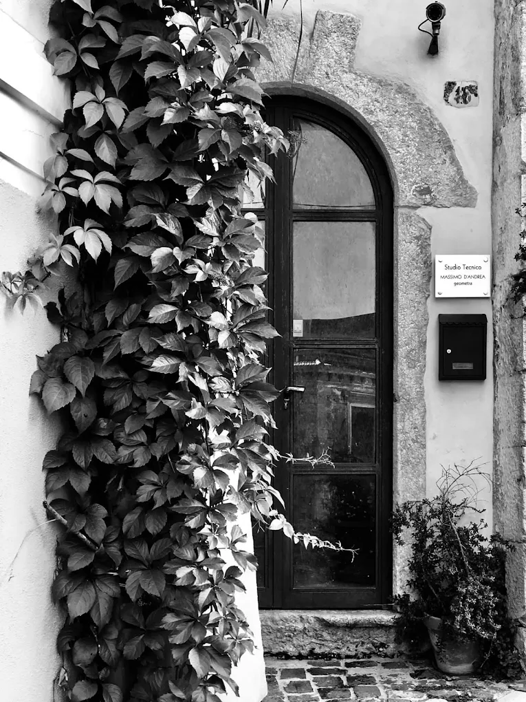

Ascolto e documenti
Raccolgo l'obiettivo, le informazioni disponibili e gli atti già in possesso.
Geometra a Venafro
Ti aiuto a capire cosa si può fare, quali documenti servono e come affrontare pratiche edilizie, catasto, sanatorie, perizie e verifiche tecniche senza procedere alla cieca.

Una valutazione tecnica iniziale evita richieste sbagliate, costi inutili e tempi persi.
Parti dalla tua esigenza
Il servizio giusto dipende dallo stato dell'immobile, dai documenti disponibili e dal risultato che vuoi raggiungere.
Verifica preventiva della conformità urbanistica, edilizia e catastale dell'immobile.
Verifica l'immobile 02Analisi di fattibilità e individuazione del percorso amministrativo realmente applicabile.
Valuta la sanatoria 03CILA, SCIA, permessi, cambi d'uso, frazionamenti e aggiornamenti catastali.
Imposta la pratica 04Stime immobiliari, relazioni tecniche, danni, contenziosi e supporto documentale.
Richiedi una periziaServizi tecnici
Ogni servizio ha una pagina dedicata, così puoi capire prima cosa comprende e quando è davvero utile.
Accertamento di conformità, regolarizzazione delle difformità e valutazione preliminare della fattibilità.
ApprofondisciControllo tra stato dei luoghi, titoli edilizi e planimetrie catastali prima di una vendita o di nuovi lavori.
ApprofondisciCILA, SCIA, permessi di costruire, DOCFA, Pregeo, variazioni e allineamenti documentali.
ApprofondisciValutazioni immobiliari, danni, relazioni tecniche e assistenza per controversie e procedimenti.
ApprofondisciAutorizzazioni ordinarie e semplificate, compatibilità paesaggistica e supporto per interventi in area vincolata.
ApprofondisciUn confronto mirato per orientarti su documenti, difformità, procedimenti e prossimi passi, ovunque ti trovi.
ApprofondisciLo studio
Ogni incarico parte dall'esame dei documenti e dello stato reale dell'immobile. Il cliente viene accompagnato con un linguaggio comprensibile, senza nascondere criticità, limiti o alternative possibili.
Come lavoro
Non tutte le pratiche sono possibili e non tutte richiedono lo stesso iter. Per questo l'analisi viene prima della proposta operativa.
Raccolgo l'obiettivo, le informazioni disponibili e gli atti già in possesso.
Confronto documenti, titoli, catasto, vincoli e, quando necessario, stato dei luoghi.
Definisco il percorso praticabile, le attività necessarie e le eventuali criticità.
Predispongo gli elaborati e seguo l'iter fino alla conclusione dell'incarico.
Consulenza anche a distanza
Se hai già documenti, planimetrie, fotografie o provvedimenti, possiamo esaminarli preliminarmente e chiarire quali verifiche servono prima di affidare una pratica completa.
Domande frequenti
Occorre confrontare lo stato attuale con i titoli edilizi conservati dal Comune e con la documentazione catastale. La sola planimetria catastale non dimostra, da sola, la regolarità urbanistica.
No. La possibilità dipende dal tipo di opera, dall'epoca di realizzazione, dalla disciplina urbanistica applicabile e dagli eventuali vincoli. La fattibilità va verificata prima di presentare qualsiasi istanza.
Sì, per un primo orientamento documentale. Se il caso richiede misure, rilievi o verifiche dello stato dei luoghi, verrà indicata la necessità di un sopralluogo.
Sì. L'attività viene organizzata in base alla natura dell'incarico, agli eventuali sopralluoghi e agli enti coinvolti. Le consulenze documentali possono essere svolte anche online.
Il costo varia in base alla complessità, ai documenti disponibili, ai rilievi necessari e agli enti coinvolti. Dopo l'analisi preliminare viene formulato un preventivo coerente con le attività effettive.
Recensioni Google
Un professionista estremamente preparato, scrupoloso ed efficiente. Ha dimostrato grande competenza tecnica e una notevole capacità organizzativa.
Ha azzerato ogni distanza: mi ha guidato passo dopo passo con consigli chiari e tempestivi.
Professionista serio, rapido e molto preparato. Ha risolto ogni pratica con efficienza, dimostrando grande competenza nel settore.
Professionista molto competente e disponibile. Puntuale e sempre attento alle esigenze del cliente. Altamente consigliato.
Una profonda preparazione tecnica e una rara capacità di problem-solving, anche nelle situazioni burocratiche più complesse.
Segue il cliente con estrema cura, spiegando ogni passaggio in modo chiaro e comprensibile. Grande attenzione ai dettagli.
Contatti
Indica il Comune, il tipo di immobile e il risultato che vuoi ottenere. Sarà più semplice capire da dove partire.
Compila i campi essenziali. Non inviare documenti sensibili tramite questo modulo.